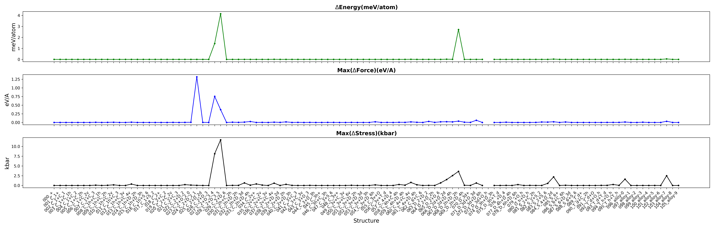

| Test_date | : | 2023-12-26 |
| Version | : | v3.5.0(64201d7 (Mon Dec 25 11:16:53 2023 +0800)) |
| Job_address | : | link |
| Targets | : | symmetry on VS symmetry off |
| Datasets | : | link |
| Properties | : | energy/force/stress/irreducible k-point/point group |
1. Introduction
This test utilized ABACUS to compute the SCF for a series of systems with symmetry set to 1 and 0, and compared the differences in energy, force, and stress between them.
Generally, the issue of symmetry is only related to the point group and space group of the system. Therefore, we selected different structures of point and space groups for testing. At the same time, some problematic configurations related to symmetry will also be collected and added to the test set.
We have performed the calculations with symemtry on and off by using VASP (
job link) and QE (
job link) on the over 100 structures collectted at the first time. And based on the results, we have established the passing criteria of energy/force/virial. The criteria of force and stress is applied for each component. The pass ratio is the number of systems that meet the criteria divided by the total number of systems.
2. Results

Figure 1. The energy/force/stress difference between symmetry on and off.
Table 1. the K points and irreducible K points, and point groups and point group in space groups, as well as the Energy/Force/Virial/Stress difference with closed symmetry analysis.
Pass/Total: 2/2 (100.00%)
| Key |
Pass/Total |
Criteria |
| NormalEnd |
2/2 |
bool(x) |
| ΔE/atom(meV) |
2/2 |
x < 1 |
| max(ΔF)(eV/A) |
2/2 |
x < 0.1 |
| max(ΔS)(kbar) |
2/2 |
x < 10 |
| example | NormalEnd | ΔE/atom(meV) | max(ΔF)(eV/A) | max(ΔS)(kbar) | max(ΔV)(eV/atom) | KPoints | IBZK | PointGroup | PointGroupInSpaceGroup |
|---|
| 000_+ | True | 0.00e+00 | 0.00e+00 | 0.00e+00 | 0.00e+00 | 125 | 63 | C_1 | C_1 |
| 001_C_1+ | True | 0.00e+00 | 0.00e+00 | 0.00e+00 | 0.00e+00 | 64 | 36 | C_1 | C_1 |